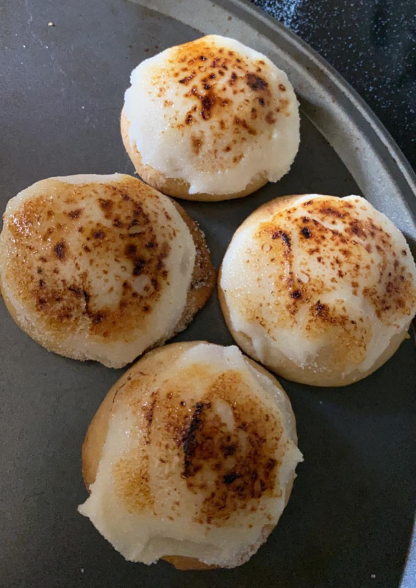

Dessert: Creme Brûlée Cookies
I orginally made this recipe at the request of my family. Creme Brûlée isn't one of my favorites, but everyone else in my house likes it so I decided to try it. As it turned out, this cookie recipe became of the favorites of all the recipes I made during quarantine. With this particular recipe, it's best to eat them when they're fresh.
Ingredients:
For the Cookies:
- 1 1/2 sticks of butter, softened
- 1/2 cup brown sugar, packed
- 1/2 cup white sugar
- 1 egg
- Splash vanilla extract
- 2 cups flour
- 2 teaspoons cornstarch
- 1 teaspoon baking soda
- Pinch of salt
For the Frosting:
- 8oz. cream cheese, softened
- Salt and pepper to taste
- 1 1/4 cup powdered sugar
- Splash vanilla extract
- 1/4 cup white sugar
Procedure:
- Preheat oven to 350° F; cover two cookie sheet with parchment paper
- In a large bowl, cream together butter, white sugar, and brown sugar until pale in color (mine took about 4 minutes)
- Add in egg and vanilla and mix
- Slowly add in the flour, cornstarch, baking soda, and salt
- Separate dough into approx. 1 tablespoon size balls and place on cookie sheet; flatten slightly (I got about 40 cookies)
- Bake 9-10 minutes until edges are browned
- For the frosting, beat together cream cheese and powdered sugar; add in vanilla
- When cookies are cooled completley, spread a thin layer of frosting on each one
- Coat the top of each cookie in white sugar; using a kitchen torch, brûlée each cookie until browned
- These cookies last for up to a week, so they are best served while still warm from the brûlée